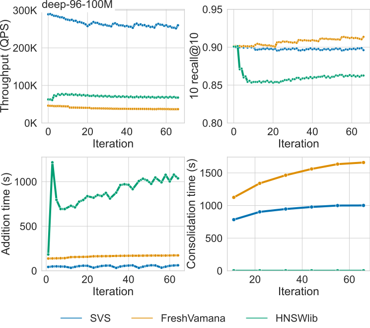
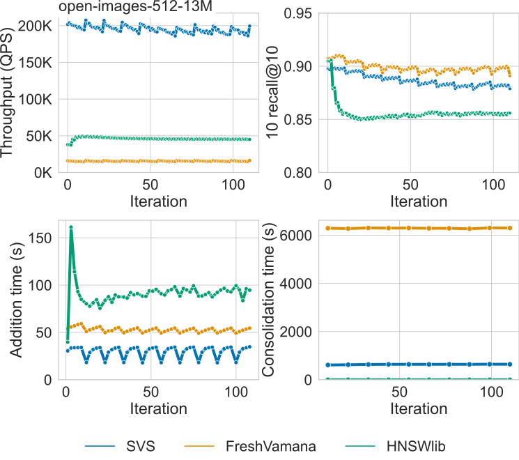
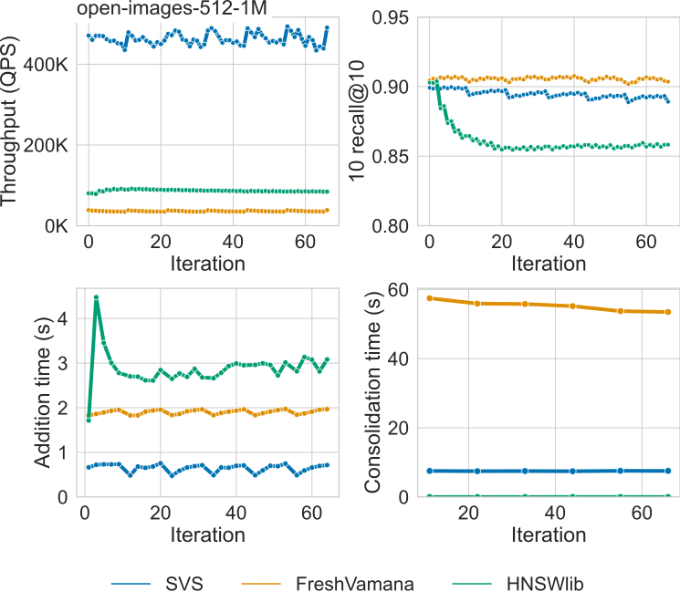
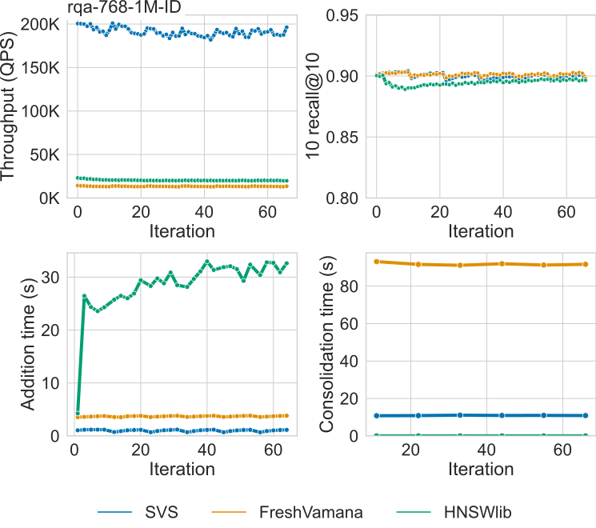

Benchmarks for Dynamic Indexing
This section presents the benchmarking results for dynamic indexing, that is, when the vectors in the database evolve over time as new elements are added and existing elements are deleted.
We compare SVS to the state-of-the-art technique for streaming similarity search FreshVamana [SSKS21] and the widely adopted HNSWlib [MaYa18] on various datasets covering a wide variety of practical scenarios, including different scales (\(n=10^6\) to \(n=10^8\)), dimensionalities (\(d=96, 512, 768\)), and deep learning modalities (texts, images, and multimodal). A summary of the experimental setup is presented below, for more details see [AHBW24].
Results summary:
SVS outperforms its competitors in terms of QPS by up to 9.4x and 4.6x for small (1M vectors) and large scale (over 10M vectors) datasets, respectively, for a search accuracy of 0.9 10 recall at 10.
SVS addition and delete-consolidation times outclass the competition by up to 3.6x and 17.7x, respectively, for a search accuracy of 0.9 10 recall at 10 (see note below about delete-consolidation times for HNSWlib).
SVS manges to keep a stable search recall over time.
The figure below shows the different evaluated metrics over time for the rqa-768-10M dataset (10M 768-dimensional embeddings generated with the dense passage retriever model RocketQA [QDLL21]). As explained in the protocol below, at each iteration vectors are randomly deleted and added to the index.
{kind=link}
Click on the triangles to see the results for the other datasets.
Results for the deep-96-100M dataset
{kind=link}
Results for the open-images-512-13M dataset
{kind=link}
Results for the open-images-512-1M dataset
{kind=link}
Results for the rqa-768-1M dataset
{kind=link}
Streaming Protocol
The graph index is initialized with a random sample containing 70% of the dataset vectors. At each iteration, we delete 1% of the vectors in the index and add 1% of the vectors that are not indexed. The vectors to be added and deleted are chosen at random. For the indices that perform delete consolitations, they are done every every 5 iterations. For more details see [AHBW24].
Datasets
To cover a wide range of use cases, we evaluate SVS on standard datasets of diverse dimensionalities (\(d=96\) to \(d=768\)), number of elements (\(n=10^6\) to \(n=10^8\)), and metrics as described in the table below.
Dataset |
d |
n |
Encoding |
Similarity |
n queries |
Space (GiB) |
|
96 |
100M |
float32 |
cosine similarity |
10000 |
35.8 |
||
512 |
13M |
float32 |
cosine similarity |
10000 |
24.8 |
||
512 |
1M |
float32 |
cosine similarity |
10000 |
2.5 |
||
768 |
10M |
float32 |
inner product |
10000 |
28.6 |
||
768 |
1M |
float32 |
inner product |
10000 |
2.9 |
||
System Setup
We run our experiments on a 2-socket 3rd generation Intel® Xeon® Platinum 8360Y CPU @2.40GHz with 36 cores (single socket), equipped with 256GB DDR4 memory per socket @2933MT/s speed, running Ubuntu 22.04. [1] [2]
We use numactl to ran all experiments in a single socket (see NUMA Systems for details).
We use the hugeadm Linux utility to preallocate a sufficient number of 1GB huge pages for each algorithm.
SVS explicitly uses huge pages to reduce the virtual memory overheads.
For a fair comparison, we run other methods with system flags enabled to automatically use huge pages for large allocations.
We run all methods with and without huge pages and report the best result.
Parameters Setting
For SVS and FreshVamana, we use the following parameter setting for graph building: graph_max_degree = 64 and
graph_max_degree = 128 for datasets with 1M and over 10M vectors, respectively; alpha = 1.2 and alpha = 0.95
for Euclidean distance and inner product, respectively; and a search window size for building of 200. For HNSWlib, we
use the same graph_max_degree setting as for the other methods (this corresponds to M = 32 and M = 64 in HNSW
parameter notation), and a search window size for building of 500.
Evaluation Metrics
In all benchmarks and experimental results, search accuracy is measured by k-recall at k, defined by \(| S \cap G_t | / k\), where \(S\) are the ids of the \(k\) retrieved neighbors and \(G_t\) is the ground-truth. We use \(k=10\) in all experiments. Search performance is measured by queries per second (QPS). We also report the time taken by the addition and delete consolidations of vectors from the database.
HNSWlib supports delete requests by adding them to a blacklist and removing the deleted vectors from the retrieved nearest neighbors. The slots in the delete list will be used for future vectors, but there is not a proper notion of delete consolidation like the FreshVamana algorithm has. Therefore, the reported consolidation time is zero for HNSWlib. This causes a search recall degradation over time for HNSWlib, as shown in the experimental results. The time taken by deletions is not reported as it is negligible compared to the other tasks for all methods.
Footnotes